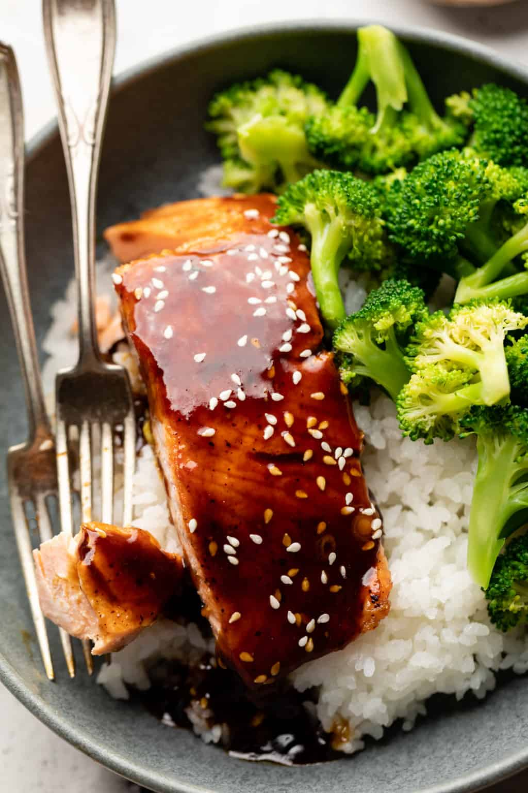

Salmon

Teriyaki Salmon
For a meal that’s well-rounded, savory, and delicious, Healthy Teriyaki Salmon checks all of the boxes. This simple dish comes together in about 15 minutes and uses coconut sugar, soy sauce, garlic, and ginger to achieve the perfect flavor!
Ingredients
- 2 filets salmon
- Salt & pepper
- 2 tablespoons avocado oil
- 2 tablespoons avocado oil
- 2 tablespoons soy sauce
- 2 tablespoons coconut sugar
- 1 teaspoon garlic powder
- 1 teaspoon ground ginger
- ½ teaspoon sesame oil
- 1 tsp arrowroot powder
- ½ cup water
Steps
- Pat salmon dry with paper towel and season with salt and pepper.
- Heat saucepan over medium-high heat with 2 tbsp avocado oil.
- Place salmon in skin side up and cook for 5 minutes.
- Flip and cook for five more minutes, covering with lid to prevent splatter.
- Meanwhile, heat small sauce-pot over medium-high heat and add all sauce ingredients from soy sauce to water. Bring to a rapid boil.
- Once boiling, reduce heat to medium-low and let thicken. Once thickened, turn off heat.
- Pour sauce on top of salmon and serve alongside rice and broccoli.
Back to recipes